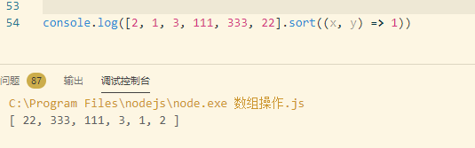
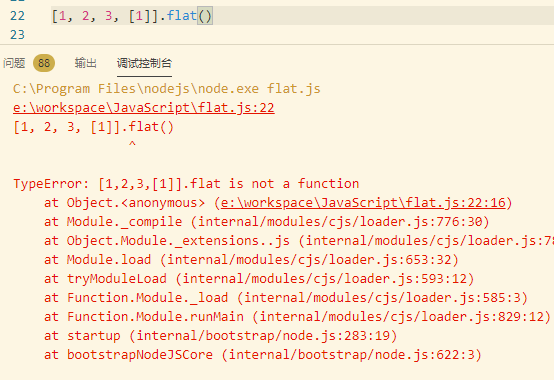

数组
数组操作
join()
将数组中的元素转化为字符串连接在一起，可以指定连接符
Array.join() 是 String.split()的逆操作
reverse()
将数组里面的元素逆序，不生成新的数组，只是在原来数组的基础上操作
sort()
将数组中的元素排序并返回排序后的数组，可自定义排序方法
不自定义排序方法，会按照字母顺序排序
自定义排序
传入比较函数，比较函数决定了它的两个参数在排序好的数组中的先后顺序。假设第一个参数在前，返回一个小于0的数，第二个参数在前返回一个大于0的数，两值相等返回0
举一个极端的例子：

相当于给数组逆序了，反之反然。
*想知道sort的内部实现以及为啥可以通过指定比较函数来排序吗，come with me *
来呀，老弟concat()
创建并返回一个新的数组
返回新数组的元素包括调用concat()的原始数组的原始和concat()的每个参数，如果这些元素任何一个自身是数组，则连接的是数组的元素，而不是数组本身。concat()，不会递归扁平化数组的数组。slice()
返回指定数组的片段或子数组，不修改原来的数组
它的两个参数指定了片段或子数组开始和结束的位置，返回的元素包含第一个参数指定的位置和所有到但不包含第二个参数指定的位置之间的所有元素。如果只指定一个参数，返回的数组包含开始位置到数组结尾的所有元素。如果指定的位置是负数，则表示相对数组中最后一个元素的位（最后一个元素的位置是-1）
splice()
在数组中插入或删除元素，会修改数组本身
第一个参数指定插入/删除位置，第二个参数指定删除元素的个数，如果忽略的话会删除从指定位置到数组结尾的元素，返回一个由删除元素组成的数组，如果没有，返回空数组。
插入元素的话，除了指定前两个参数外，还可以指定若干个其它元素，作为插入元素。
push() 和 pop()
push() 和 pop()允许将数组当中栈来使用，修改原来的数组
push()方法在数组的尾部添加一个或多个元素，返回数组新的长度，pop()删除数组的最后一个元素，返回它删除的值。
unshift() 和 shift()
类似于pop() 和 push()，只不过 unshift() 和 shift()是在数组头部操作的
有木有发现很神奇的一点，unshift 在加入元素的时候不是一个一个加的，是一坨一坨加的
问题来了，创建数组的时候可以指定数组大小 ,例如new Array(3) ，向数组加入元素超过数组本身大小会怎么办？？
0202年了，肯定会自动扩展嘛。
打扰了，默默的报个错就完了，没那么多花里胡哨的。
toString() 和 toLocaleString()
将数组转换成字符串
输出用逗号分隔的字符串列表，不包含方括号和其他形式的包裹数组值得分隔符。
toLocaleString是toString的本地化实现
ECMAScript5中的数组方法
forEach
从头到尾遍历数组，对每个元素使用指定函数
指定函数function(value,index,array){}可以包含三个参数，后面两个可以省略。
forEach()无法在所有元素遍历完之前停止遍历，凡事都有个例外，欲知后事如何，且看这篇文章
{% post_link JavaScript-怎么跳出Array-forEach %}map()
调用数组的每一个元素传递给指定函数，并返回一个新数组
filter()
返回的数组元素是调用的数组的子集，传递的函数是用来逻辑判断的，返回true 或 false，如果返回的是true 或能转换成true的值，那么传递给判定函数的元素就是这个子集的成员，不改变原数组
every() 和 some()
对数组元素应用指定的函数进行判定，返回true 或 false
一旦every() 和 some()确认返回什么值（true or false），就会停止遍历数组
reduce() 和 reduceRight()
使用指定函数将数组元素进行组合，生成单个值，称为注入跟折叠
reduce()需要两个两个参数。第一个是执行化简的函数，化简函数是运用某种方法将两个值合并或化简为一个值，并返回化简后的值。第二个参数（可选）是传递给函数的初始值。
两者返回值都是一样，但第一个有初始化值，第二个没有初始值，有初始值的时候，第一个参数就是初始值（第一个reduce第一次调用的参数是x=0 y=1 ），没有初始值的时候会使用数组的第一个元素作为初始值（第二个Reduce第一次调用的参数x=1 y=2，就是数组的第一二个元素）。
reduceRight()原理跟reduce一样，只不过它按照数组索引从高到低处理数组元素。
indexOf() 和 lastIndexOf()
搜索整个数组中具有给定值的元素，返回找到第一个元素的索引或没有找到返回-1
indecOf() : 从数组头部开始搜索
lastIndexOf():从数组尾部进行搜索
可以接收两个参数，第一个是待搜索的元素，第二个是搜索的起始位置（可以为负数）
ECMAScript6-数组的扩展
扩展运算符(...)
将数组分解为逗号分隔的参数序列
扩展运算符只有在函数调用的时候才能放在圆括号里面
应用
复制数组：
let arr = [1,2,3,4]
//写法一
let arr2 = [...arr]
//写法二
let [...arr3] = arr合并数组：
let arr1 = [1,2,3,4]
let arr2 = [5,6,7,8]
//合并
let arr3 = [...arr1,arr2]与解构赋值的结合：
let list = [1,2,3,4,5,6]
let [first , ...rest] = list //其实也就相当于复制数组的第二种写法可以将字符串变成数组：
console.log(...'str')// ['s','t','r']Array.form()
将类数组对象和可遍历对象转化成真正的数组
所谓类似数组的对象，本质特征只有一点，即必须有length属性，常见的类数组对象是数组内部的arguments 和 DOM操作返回的NodeList 节点。
let arrayLike = {
'0':'0',
'1':'1'
'2':'2'
lenght: 3
}
//ES5
[].slice.call(arrayLike); //['1','2','3']
//ES6
Array.form(arrayLike);//['1','2','3']Array.form()可以接收第二个参数，作用类似于数组的map()，对每个元素进行处理后返回。

Array.of()
将一组值转换成数组
Array.of()是为了弥补Array()行为不一致的问题
参数不一样，Array()表现得不一样
find() 和 findIndex()
find：找到符合条件的第一个数组成员，没有找到返回undefine
findexIndex：找到符合条件的数组成员的下表，没有找到返回-1
回调函数可以接收三个值：元素本身、元素下标、数组本身
fill()
对数组进行填充
待填充的数组没有值
待填充的数组有值
会把原有的值进行覆盖
includes()
判断数组中是否包含某个值，返回true 或 false
[1,2,3,NaN].includes(NaN,1)//第一个参数是待判断的值，第二个参数可选，指定搜索起点。flat()
拉平数组，一维化
在vscode中用，有点问题

自己试试写，就是一个简单的递归
function flat(arr) {
let result = [];
if (Object.prototype.toString.call(arr) === '[object Array]') {
arr.forEach(item => {
if (Object.prototype.toString.call(item) === '[object Array]') {
result = result.concat(flat(item))
} else {
result.push(item);
}
})
}
return result;
}